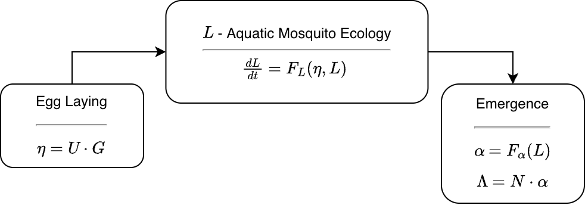

The L Component
Models for Immature Mosquito Ecology
Source:vignettes/L-interface.Rmd
L-interface.RmdThe L component was designed to model aquatic mosquito ecology. This vignette takes an overview of the functions in the L component. It is useful for anyone who wants to learn more about how the code works.
In context, an L module gets the egg laying rate, \(\eta\) from the ML-interface. It is the dot product of the total mosquito egg laying rate in a patch \(G\) and the egg laying matrix \(U\) (Figure 1). The core functions compute either
xde— a set of derivatives, generically denoted \(dL/dt\)dts— a function that updates the state variables.
It outputs the habitat emergence rate \(\alpha,\) the number of adult female mosquitoes emerging from a patch, per day.

Functions
To get a list of the S3 generic function definitions
from help, type:
?L_functionsTo inspect a method for a specific function, use
getS3method
The L Component defines 16 S3 generic functions in
aquatic-L.R. Most of these are S3 class
functions, but a few work generically. Each module defines two functions
to set up an L object.
The required functions deal with various tasks required to build or solve a model, inspect or change the parameters or initial values, compute terms or outputs, and run consistency checks.
Each module is defined by a string, generically called
Lname, that identifies the module: e.g.
basicL.
Dynamics
At least one of the following is required, depending on whether the model family is a system of differential equations or a discrete time system:
dLdt.Lname:: differential equations are defined by a function that computes the derivatives. Inramp.xdsthese are encoded in a function calleddLdt. The function is set up to be solved bydeSolve::odeordeSolve::dede.Update_Lt.Lname:: discrete time systems are defined by the function that updates the state variables in one time step. Inramp.xdsthese are encoded in a function calledUpdate_Ltthat computes and returns the state variables. The forms mimic the ones used for differential equations.
Bionomics
Two functions update bionomic parameter values at each time step, called in sequence before the dynamics are computed.
LBionomics.Lname– computes the current bionomic parameter values for parameters that are ports. It also resets all effect sizes to 1.LEffectSizes.Lname– applies vector control effect sizes to the bionomic parameters set byLBionomics.
Model Object
Each module has a pair of functions that set up a structured list
called the L model object, or L_obj.
The object is a list that is assigned to a class that
dispatches the S3 functions described below. It is a
compound list, where some of the sub-lists are assigned their own
class that dispatch other S3 functions.
setup_L_obj.Lnameis a wrapper that callsmake_L_obj_Lnameand (for the \(i^{th}\) species) attaches the object asxds_obj$L_obj[[i]]-
make_L_obj_Lname:: returns a structured list called an L model object:class(L_obj)=Lnamethe indices for the model variables are stored as
L_obj$ixthe initial values are stored as
L_obj$initsbionomic parameter values
anything else that is needed can be configured here
In some cases, bionomic parameters are set up as ports (see [xds_info_port]); the value is set by a call to a function.
Parameters
get_L_pars.Lnamereturns a named list of the parameter values.change_L_pars.Lnamechanges the values of some parameters by passing a named list. It is designed to be used after setup. New parameter values are passed by name in a list calledoptions.
Variables
Since the L component is one of three, a function sets up the indices for all the variables in a model.
Two other functions use those indices: one pulls the variables from
the state variable vector \(y\); the
other one pulls the variables by name from an output matrix returned by
xds_solve.
After pulling, both functions return the variables by name in a list to make it easy to inspect or use.
setup_L_ix.Lname- is the function that assigns an index to each variable in the model, and stores them as a named list atxds_obj$L_obj[[s]]$ix. The indices can be retrieved withget_L_ix.get_L_ix– returns the indices stored atL_obj[[s]]$ixget_L_vars.Lname- retrieves the value of variables from the state variables vector \(y\) at a point in time and returns the values by name in a list; the function gets called bydLdtand it can be useful in other contexts.parse_L_orbits.Lname- this function is likeget_L_varsbut it parses the matrix of outputs returned byxds_solve.
Initial Values
A set of functions sets up or changes the initial values for the state variables.
setup_L_inits.Lname- is a wrapper, that gets called byxds_setupand that callsmake_L_inits_Lname. The setupoptionsare passed to overwrite default values. The initial values are stored asL_obj$inits.make_L_inits_Lname- each model must include a function that makes a set of initial values as a named list. This function does not belong to anyS3class, so it can take any form. The function should supply default initial values for all the variables. These can be overwritten by passing new initial values inoptions.get_L_inits– returns the initial valueschange_L_inits.Lname- changes the initial values.
Consistency Checks
Some modules in ramp.xds or
ramp.library have been included for
various reasons. Not all of those models are capable of being extended.
To help users avoid using models in ways that are not appropriate, we
developed two function classes:
skill_set_L.Lname:: describes model capabilities and limitationscheck_L.Lname:: at the end ofxds_setupand at the beginning ofxds_solve,this function gets run to ensure that some quantities have been properly updated, and to see if anything has been added to a model that is not in its skill set.
Solving
Functions to get steady states, orbits, and plot outputs:
get_L_orbits– retrieves the saved, parsed orbits for the L component from anxdsobjectsteady_state_L.Lname:: pass the egg laying rate and compute steady states for the L component.xds_plot_Lis a wrapper that callsxds_lines_Lxds_lines_Lplots larval density